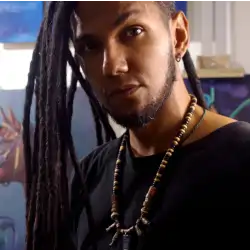

Pintura al Óleo
Pintura en Acrílico

Nombre de la Obra
Técnica: Acrílico sobre madera.
Retratos Grafito
Camisas
Muralismo
Sobre el artista

Apasionado por la forma, el color y la riqueza de los detalles, entiendo el arte como un proceso de constante aprendizaje y evolución. En cada técnica desde el lapiz, el óleo, el acrílico, el dibujo en grafito, decoloracion con hipoclorito y el muralismo, me dedico a explorar la expresión visual con dinamismo y precisión, buscando conectar emociones a través de la luz y la materia. La diferencia entre algo bueno y excelente es el tiempo extra.